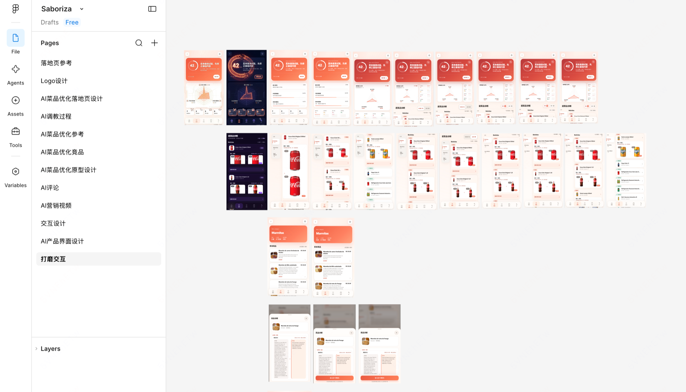
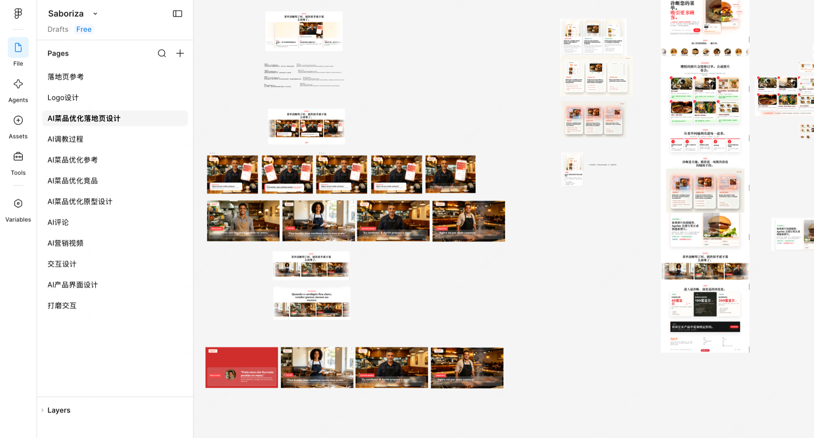
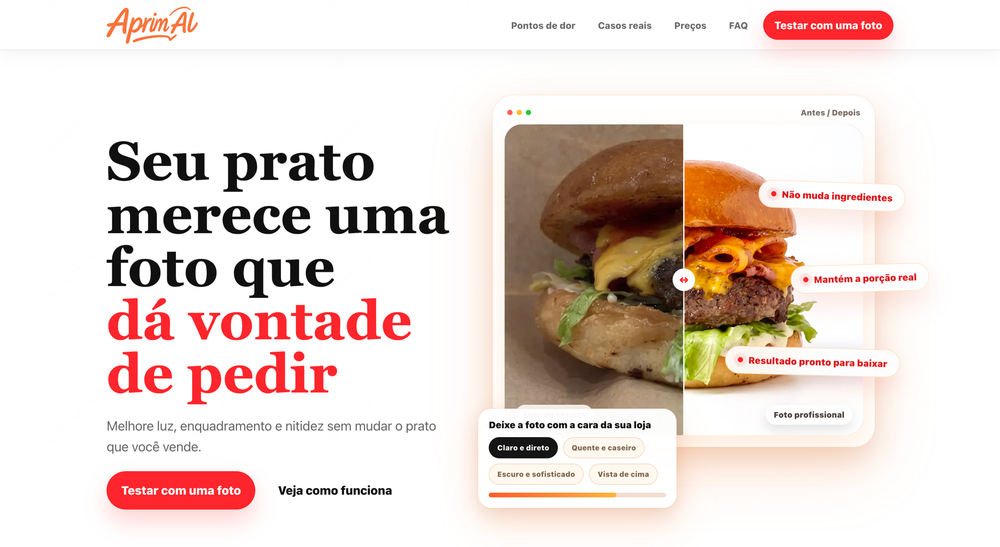
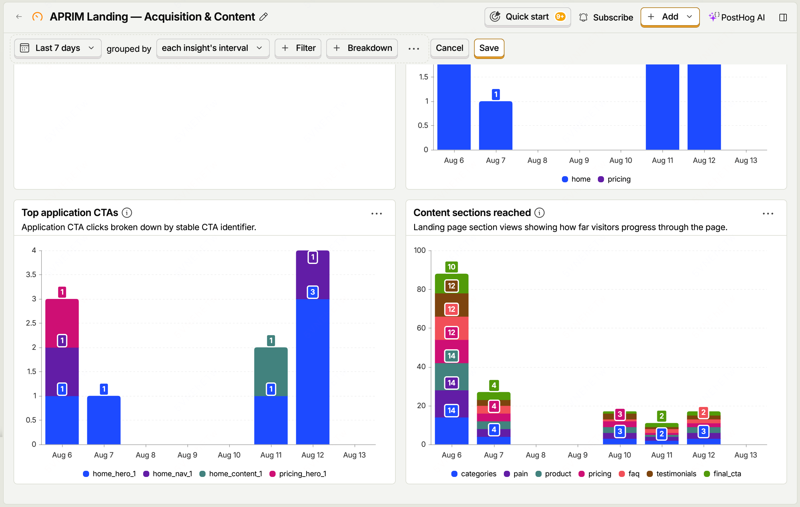
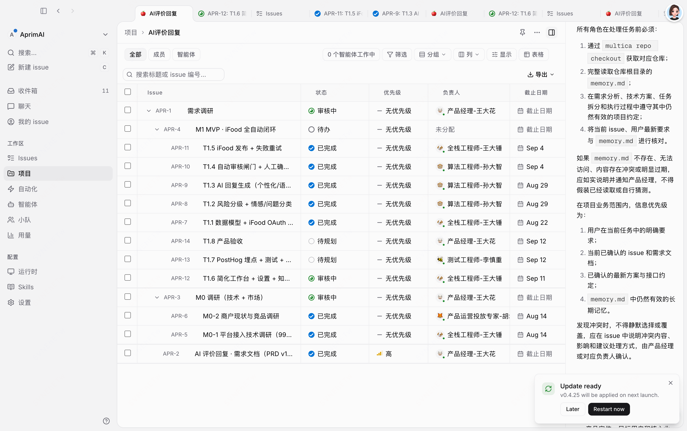

MENU COPILOT · 0→1 × PHASE III
把一个想法，
跑成一条流水线
Menu Copilot 从 0→1
以及三人团队如何走向 Agent—Human—Agent
OPC 内部分享 · 2026.08

OPC · AI-native 产品实践
01
先讲一个反直觉的结论
01 / REALITY
0→1 真正难的，
不是把页面做出来
而是让方向、数据、体验、工程、责任与价值，
同时进入一个可验证闭环。
OPC · AI-native 产品实践
02
难度全景 · 六层必须同时成立
看起来是一张页面，
实际上要同时过六道关。
01方向值得做什么用户与市场
02证据问题是否真实样本与规则
03体验用户能否理解流程与 UI
04工程结果能否稳定生效系统与测试
05责任风险由谁放行权限与回滚
06价值上线后是否有效埋点与实验
难点不是六件事各做一次，而是每次范围变化，都要让六层重新对齐。
OPC · AI-native 产品实践
03
协作方式 · 不把边界当作停工理由
三个人不是守住三个岗位。
我们共同覆盖一整条产品生命周期。
19类能力判断
- 用户研究
- 市场研究
- 数据分析
- 产品经理
- 交互设计
- UI 设计
- 前端工程
- 后端工程
- AI / 算法
- 数据工程 / 埋点
- 测试 / QA
- i18n / 本地化
- 发布运维
- 安全 / 隐私
- 产品运营
- 商家运营
- BD / 客户成功
- 内容 / 自媒体
- 增长投放
传统边界分工“这不是我的范围”模糊地带 → 等待 · 转交 · 扯皮
→
结果共同负责“谁最接近结果，谁推动闭环”Agent 跨界补位 · Human Gate 放行
OPC · AI-native 产品实践
04
方向关 · 小场景、强痛点、可闭环
我们没有先问“AI 能做什么？”
而是先问：商家能否在几分钟内——
- 看见问题
- 理解建议
- 完成一个安全动作
所以，第一款产品选择了菜单真实 · 高频 · 可见 · 可行动
OPC · AI-native 产品实践
05
证据关 · 69 家门店 / 2,564 道菜 / 409 个分类
样本把“感觉有问题”，
变成了可以讨论的事实。
44.3%
缺图或默认图
1,135 道菜27.6%
缺少描述
708 道菜7.4%
同店重复名称
190 道菜样本口径另有 14.2% 的分类仅含 1 道菜。样本后 50 店按“至少一张真实图片”筛选，不能外推为巴西市场总体比例。
06
范围收敛 · 2026.07.20—08.12
24 天不是“做完一版”，
而是连续完成三次收敛。
范围不断变，四条底线没有变真实输入 · 可解释建议 · 人工确认 · 可审计与回滚
OPC · AI-native 产品实践
07
完整系统 · 不是一条线，而是三个相互驱动的环
一个真实产品，至少要跑通
三个闭环。
真实产品MENU
COPILOT每一轮都产生
下一轮的证据
COPILOT每一轮都产生
下一轮的证据
执行结果写入数据→数据改变产品判断→判断重新塑造 UI 与实现
OPC · AI-native 产品实践
08
闭环 01 · Product execution
AI 生成候选，
产品必须保证它安全生效。
01真实菜单快照与权限
→
02规则 + Agent事实与候选
→
03ChangeSetbefore / after
→
04商家确认逐字段放行
→
05Apply + 回读审计、重试、回滚
生成完成 ≠ 产品完成授权幂等重试审计回读回滚
OPC · AI-native 产品实践
09
闭环 02 · UI production
AI 能快速生成十个方案，
但不能替我们判断哪一个值得上线。
01先定义目标
用户是谁、这一屏解决什么、信息层级与气质怎样。



AI 擅长发散 · 骨架 · 第一版人来守门比例 · 层级 · 交互 · 品牌
OPC · AI-native 产品实践
10
闭环 03 · Data learning
产品上线只回答“能不能用”，
埋点才开始回答“有没有价值”。

01埋点回流访问、区块、CTA
以及产品关键动作
↓
以及产品关键动作
02AI 分析漏斗、流失、分群
异常与内容偏好
↓
异常与内容偏好
03需求候选问题、证据、方案
成功标准与优先级
↓
成功标准与优先级
04人审后实验确认样本、价值与风险
实现、发布、再观察
实现、发布、再观察
AI 可以主动发现问题并提出需求；是否立项，仍由人结合样本质量、业务价值和风险判断。
OPC · AI-native 产品实践
11
协作升级 · 把模糊地带从无人区变成共同完成区
V3 不是取消专业分工，
而是消灭边界上的等待。
产品诊断与生成事实、风险、采纳ChangeSet / 发布证据
UI发散与骨架层级、交互、品牌Design Tokens / 状态
数据漏斗与异常分析样本、价值、优先级Experiment Brief / Eval
传统协作 / V2.5岗位各守边界；模糊地带靠人转交、补上下文、争责任→结果协作 / V3.0工件被系统自动认领和接力；人在责任 Gate 对结果放行
OPC · AI-native 产品实践
12
PHASE III · V3.0 · MULTICA × DEEPSEEK V4 FLASH
Agent 接力，
人类在四个责任点放行。
PM
Agent需求草案
→
Agent需求草案
人类 PM业务边界
→
Design
Agent界面方案
→
Agent界面方案
人类 Design审美规范
→
Dev
Agent实现与构建
→
Agent实现与构建
人类 Dev架构 CR
→
QA
Agent测试与 Eval
→
Agent测试与 Eval
人类 QA质量放行
→
Release证据归档
自动流转的是工件，不是责任。
OPC · AI-native 产品实践
13
交接契约 · 每一步都有 Schema、状态和证据
让工件跑一圈，
而不是让人重新讲一遍。
01Evidence Brief问题与真实证据
→
02Req Schema范围、边界、验收
→
03UI + Tokens状态、交互、规范
→
04PR + Build代码、变更、预览
→
05Test + Eval用例、失败、回归
→
06Release Evidence部署、回读、观测
PostHog / 线上行为 / 人工修改 / 驳回原因写回新的 Evidence Brief 与 Eval，触发下一轮
结构化工件解决“自动接力”，可追溯证据解决“谁来负责”。
OPC · AI-native 产品实践
14
外部案例 · WhatsApp Bot 自动评测
局部自动化一旦闭环，
收益来自更快的学习。
旧模式≈ 7工作日
→AI 自动评测1–2工作日
100%评测覆盖
旧模式抽样不足 5%
旧模式抽样不足 5%
13k每周样本沉淀
旧模式约 600 条
旧模式约 600 条
自动评测 → 人工复核 → 问题回流 → 下一轮方案
案例指标来自分享文档，用于说明组织杠杆，不代表 OPC 当前产出。
OPC · AI-native 产品实践
15
OPC 真实运行 · Multica × DeepSeek V4 Flash
目标澄清之后，角色 Agent
已经能够自己接力。

01一组一智能体产品、工程、算法、测试等组都有专属 Agent
02角色拓扑持续打磨依赖关系、先后层级与升级路径
03项目约束仓库、memory、issue 与最新需求共同约束执行
04自动调度拆解目标，按角色派发，串并行完成并回写状态
澄清后进入自主执行区目标 → 拆解 → 调度 → 执行 → 汇总人只在关键结果上审核、驳回或纠偏
OPC · AI-native 产品实践
16
行动与验收 · 从可运行走向可复制
下一步不是“做出编排”，
而是把它跑稳、量化、复制。
编排自动接力完成率无需人搬运即可完成的任务比例
审核一次审核通过率返工、驳回、纠偏与线上问题
介入非审核人工介入率 ↓人是否仍在补上下文、派任务、催进度
最终目标不是“无人负责”，而是除了审核与关键纠偏，人不再搬运工作。
OPC · AI-native 产品实践
17
最后，带走一个转变
把个人速度，
变成组织吞吐。
方向、审美、价值与责任留给人
生成、分析、测试与重复执行交给 Agent
所有工件、修改、失败和结果都写回系统
18